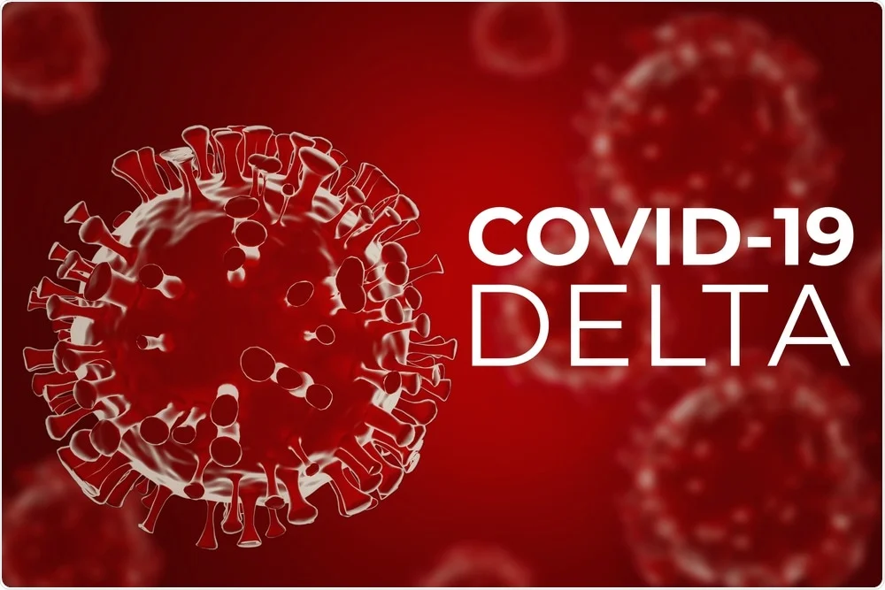
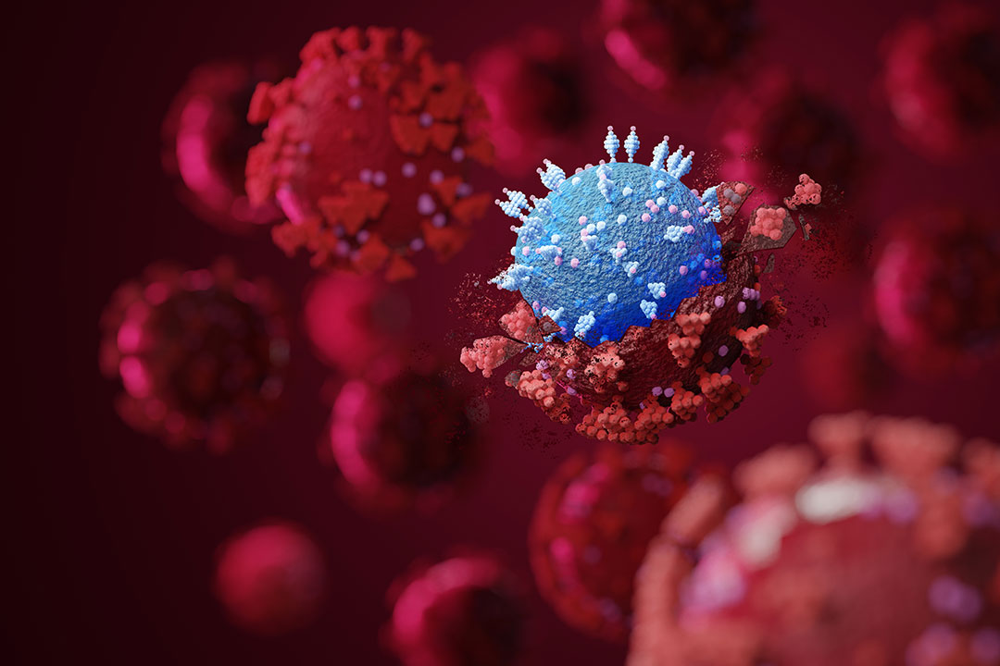
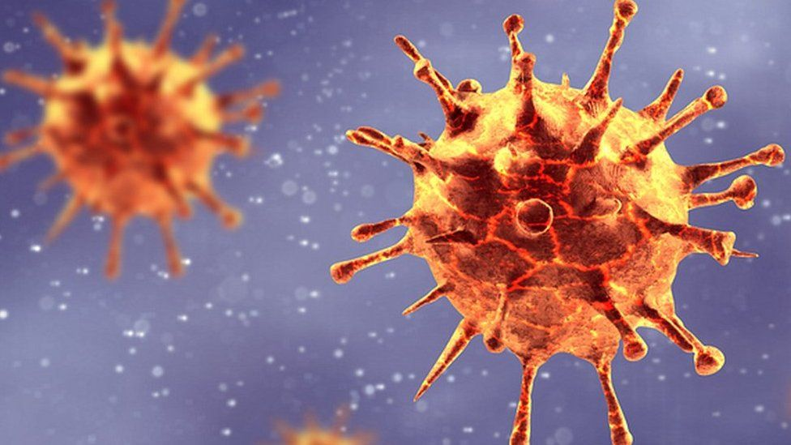
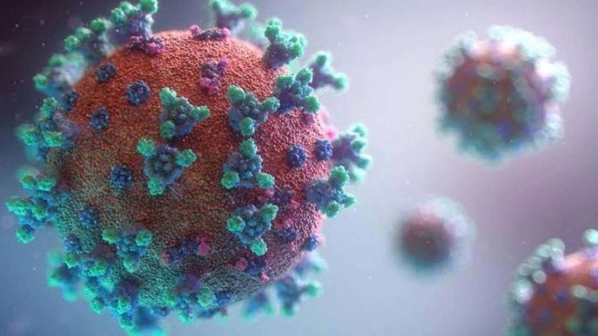
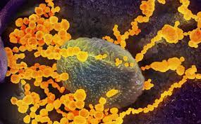

Omicron
The omicron variant of COVID-19 has become the dominant strain of the virus circulating in the U.S. and the rest of
the world. It's more easily spread than previous strains because it has more mutations than any other variant so far.
Many of the mutations are in the spike protein, which relates to how the virus is spread.

Delta
The Delta variant of COVID-19 has been called a variant of concern by WHO because of its increased transmissibility and
increased ability to cause a severe form of the disease. Where the Delta variant is identified, it quickly and efficiently
spreads between people.

Alpha
First detected in the United Kingdom, and designated a variant of concern in December 2020, Alpha has now been verified in
192 locations worldwide (as of 3 December 2021). Alpha is estimated to be around 50% more contagious than the original Wuhan
strain, although there is considerable variation between studies.

Beta
Beta was first identified in South Africa. All viruses, including the one that causes Covid-19, constantly mutate into
new versions or variants.These tiny genetic changes happen as the virus makes new copies of itself to spread and thrive.
These tiny genetic changes happen as the virus makes new copies of itself to spread and thrive.

Gamma
The Gamma variant, first documented in Brazil in November 2020, is estimated to be 1.7–2.4 times more contagious than other
local strains in that country. Canada has reported more than 15 000 cases to date.The Gamma variant has some of the same
mutations as the Alpha and Beta which allow it to attach more easily to human cells.

Epsilon
Three mutations in the Epsilon coronavirus spike protein dampen the neutralizing potency of antibodies induced by current
vaccines or past COVID infections.The mutations give this coronavirus variant of concern a means to totally evade specific monoclonal
antibodies used in clinics and reduces the effectiveness of antibodies from the plasma of vaccinated people.